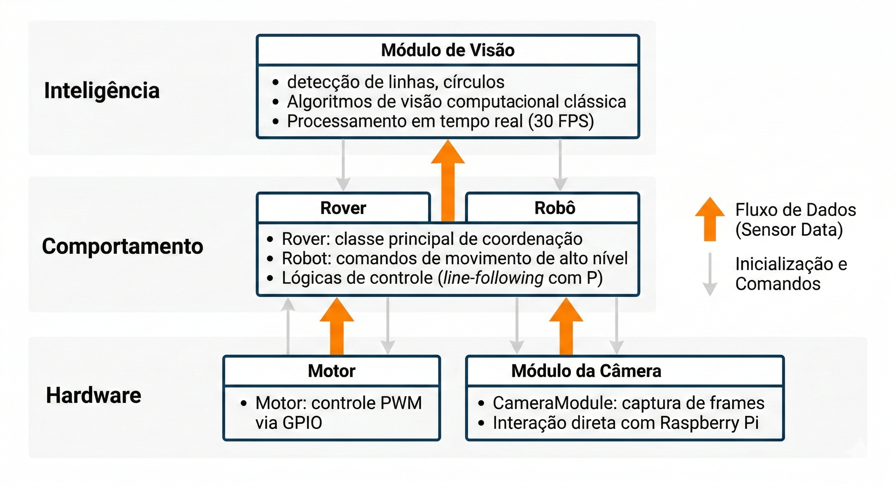
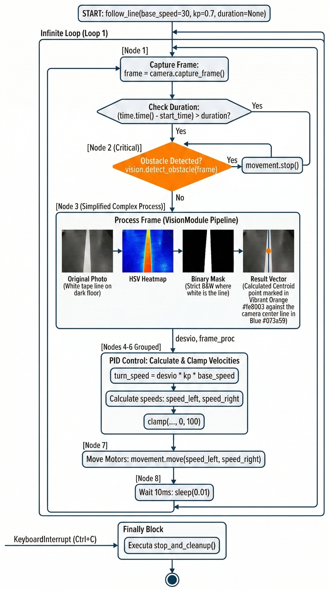
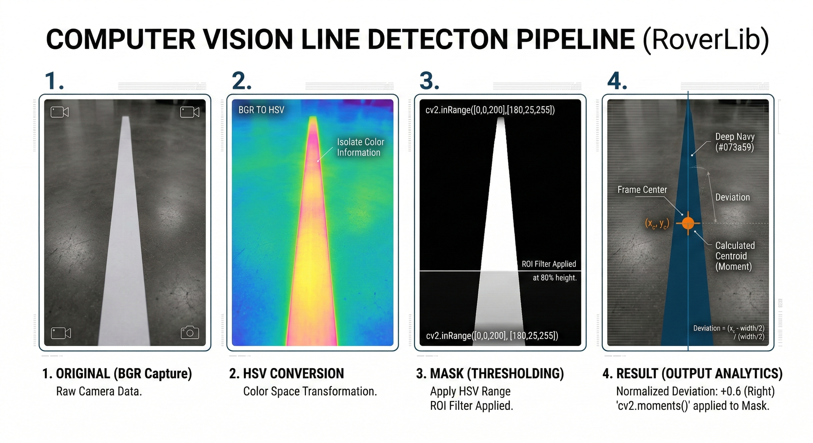

Arquitetura do Sistema Rover
Visão Geral
O sistema Rover é uma plataforma robótica modular em Python implementada para Raspberry Pi 5, arquitetada em três camadas funcionais que separam claramente as responsabilidades entre hardware, lógica comportamental e processamento de inteligência visual. Esta separação de responsabilidades (separation of concerns) facilita a manutenção, testes unitários e permite que desenvolvedores e sistemas de alto nível arquitetem lógicas previsíveis e corretas. A biblioteca exporta uma interface simplificada através da classe Rover, que orquestra a inicialização e coordenação de todos os módulos subordinados.
Estrutura em Camadas
A arquitetura em camadas do Rover segue o padrão de abstração crescente, onde cada camada encapsula um domínio específico e expõe interfaces bem definidas para a camada superior.

Camada 1: Drivers de Hardware
Esta camada fornece abstração direta sobre os componentes eletrônicos da Raspberry Pi, encapsulando a complexidade dos protocolos GPIO, PWM e captura de câmera.
1.1 Controle de Motores DC
Arquivo: roverlib/src/roverlib/modules/movement/motor.py
A classe Motor fornece controle de baixo nível para um único motor DC acoplado a uma ponte-H L298N (H-bridge). Gerencia diretamente os sinais GPIO e os sinais PWM (Pulse Width Modulation) que determinam a velocidade de rotação.
Inicialização e Configuração
from roverlib.modules.movement.motor import Motor
# Criar instância do motor com pinos GPIO
motor = Motor(pins=(12, 11), pwm_frequency=1000)
# Configurar os pinos GPIO e iniciar PWM
motor.initialize()
# Executar movimento
motor.set_movement(speed=75, direction="FORWARD")
Parâmetros e Comportamento
-
pins(tupla de inteiros): Dois pinos GPIO que controlam as entradas IN1 e IN2 da ponte-H. A ponte-H recebe um par de sinais lógicos que determinam a polaridade da tensão aplicada ao motor (favorecendo rotação em um sentido ou outro). -
pwm_frequency(inteiro, padrão: 1000 Hz): Frequência de modulação por largura de pulso. Valores típicos variam entre 500 Hz e 2000 Hz. Frequências maiores reduzem ruído audível mas aumentam consumo de CPU. -
speed(float, intervalo 0–100): Percentual do ciclo de trabalho (duty cycle) do sinal PWM. Valor 0 representa motor parado; valor 100 representa máxima velocidade. A relação entre duty cycle e velocidade linear é aproximadamente proporcional. -
direction(string): Especifica o sentido de rotação. Valores aceitos:"FORWARD"e"BACKWARD"(case-insensitive).
Gestão de Ciclo de Vida
O método initialize() deve ser invocado antes de qualquer chamada a set_movement(). A inicialização configura os pinos em modo de saída (GPIO.OUT), cria os objetos PWM nas frequências especificadas e inicia o duty cycle em 0%. Seu estado é rastreado pela flag interna _initialized.
Ao término da aplicação, o método cleanup() deve ser invocado para liberar recursos GPIO e evitar corrupção de estado do sistema operacional.
Tratamento de Erros
A classe Motor lança três exceções especializadas definidas em execeptions/motorExeceptions.py:
MotorCreationError: Levantada seRPi.GPIOnão estiver disponível (não executando em Raspberry Pi).UninitializedMotorError: Levantada seset_movement()for invocado antes deinitialize().DirectionInvalidMotorError: Levantada se um valor inválido for passado para o parâmetrodirection.
1.2 Captura de Câmera
Arquivo: roverlib/src/roverlib/modules/camera/cameraModule.py
A classe CameraModule abstrai a captura de frames de câmera, fornecendo suporte automático para hardware Picamera2 (nativo de Raspberry Pi 5) e fallback para mock em plataformas de desenvolvimento que carecem do hardware.
Inicialização
from roverlib.modules.camera.cameraModule import CameraModule
# Criar instância da câmera
camera = CameraModule(height=480, width=640, analogic=1.5, exposure=30000)
# Capturar um frame
frame = camera.get_frame()
# Obter resolução de preview
resolution = camera.get_preview_resolution()
# Liberar recursos
camera.cleanup()
Detecção Automática de Plataforma
O módulo implementa um padrão de detecção dinâmica:
-
Na Raspberry Pi 5: Importa
picamera2com sucesso. O modo de configuração épreviewem RGB888, com resolução configurável e suporte a controle de ganho analógico e tempo de exposição. -
Em plataformas sem Picamera2: Uma classe mock é instanciada, que retorna frames de teste (gradiente cinza) com dimensões configuráveis. Útil para desenvolvimento e testes em estações de trabalho.
A variável de flag is_mock permite código condicional para comportamentos específicos de plataforma.
Configuração de Câmera
Os parâmetros de captura são carregados do arquivo roverlib/src/roverlib/configs/config.yaml:
camera:
fps: 30 # Taxa de captura em frames por segundo
resolution: [3280, 2464] # Resolução total do sensor
preview_resolution: [640, 480] # Resolução de processamento
Os parâmetros analogic e exposure ajustam características de iluminação:
-
analogic(float, típico 1.0–4.0): Amplificação analógica do sensor. Valores menores escurecem a imagem; valores maiores a iluminam (com aumento de ruído). -
exposure(inteiro em microssegundos): Tempo de exposição do sensor. Valores menores produzem imagens mais escuras; valores maiores capturam mais luz.
Formato de Retorno
O método get_frame() retorna um array NumPy em formato BGR (Blue-Green-Red), compatível com OpenCV. A conversão automática de RGB (capturado pela câmera) para BGR é realizada internamente.
Camada 2: Comportamento (Orquestração e Movimento)
Esta camada implementa abstrações de alto nível que coordenam motores e sensores para realizar tarefas compostas, como seguir linhas ou executar movimentos estruturados.
2.1 Classe Robot
Arquivo: roverlib/src/roverlib/modules/movement/robot.py
A classe Robot encapsula a coordenação de dois motores (esquerdo e direito) para produzir movimentos de alto nível como avanço, recuo e rotações.
Inicialização
from roverlib.modules.movement.robot import Robot
# Criar instância com pinos dos motores
robot = Robot(
left=(12, 11), # Pinos do motor esquerdo (direção, PWM)
right=(22, 23), # Pinos do motor direito (direção, PWM)
pwm_frequency=1000 # Frequência em Hz
)
# Agora os motores estão configurados e prontos
Métodos de Movimento
Todos os métodos de movimento aceitam parâmetros opcionais de duração que, quando definidos, fazem o robô executar o movimento por um tempo determinado antes de parar automaticamente.
forward(speed=50, duration=None) → bool
Move o robô para frente aplicando a velocidade especificada em ambos os motores com polaridade idêntica.
# Movimento indefinido
robot.forward(speed=60)
# Movimento de 2 segundos
robot.forward(speed=60, duration=2.0)
backward(speed=50, duration=None) → bool
Move o robô para trás invertendo a polaridade em ambos os motores.
turn_left(speed=50, duration=None) → bool
Gira o robô no sentido anti-horário. O motor esquerdo é parado enquanto o direito avança, produzindo rotação in situ.
turn_right(speed=50, duration=None) → bool
Gira o robô no sentido horário. O motor direito é parado enquanto o esquerdo avança.
move(speed_left, speed_right) → None
Aplica velocidades independentes a cada motor, permitindo movimentos curvos e manobras complexas.
# Curva suave para esquerda
robot.move(speed_left=40, speed_right=60)
# Aproximação de rotação diferencial
robot.move(speed_left=60, speed_right=40)
stop() → None
Para ambos os motores imediatamente.
cleanup() → None
Libera todos os recursos GPIO associados aos motores.
Calibração de Motores
O módulo roverlib/src/roverlib/modules/movement/motorCalibration.py implementa compensação de assimetrias mecânicas. Em robôs reais, diferenças nas resistências de atrito, enrolamento de bobina e engrenagens causam que, quando aplicada a mesma velocidade, o robô desvie para um lado.
A classe MotorCalibration carrega fatores de compensação do arquivo config.yaml:
motor_calibration:
limiar_motor_esquerdo: 1.0 # Fator multiplicativo de velocidade
limiar_motor_direito: 1.0 # Fator multiplicativo de velocidade
Valores acima de 1.0 aumentam a velocidade do motor especificado; valores abaixo reduzem.
2.2 Classe Rover (Orquestrador Principal)
Arquivo: roverlib/src/roverlib/rover.py
A classe Rover é o ponto de entrada da biblioteca. Inicializa todos os módulos e fornece métodos de alto nível para tarefas robóticas complexas como line-following.
Inicialização
from roverlib import Rover
# Instanciar o Rover
rover = Rover(pwm_frequency=1000)
# A instância agora possui três atributos públicos:
# - rover.movement (instância de Robot)
# - rover.camera (instância de CameraModule)
# - rover.vision (instância de VisionModule)
Durante a inicialização:
Config.get("gpio")carrega a configuração de pinos do arquivoconfig.yaml.- Instâncias de
Robot,CameraModuleeVisionModulesão criadas. - Mensagens de diagnóstico são impressas no console.
Método Principal: Line-Following
follow_line(base_speed=30, kp=0.7, max_turn_speed=25, duration=None) → None
Este método implementa um algoritmo de seguimento de linha usando controle proporcional (P). O robô executa um loop de tempo real que:
- Captura frame da câmera
- Detecta obstáculos (prioridade máxima)
- Processa o frame para extrair desvio da linha
- Aplica controle proporcional para corrigir trajetória
- Aguarda 10 ms antes da próxima iteração
rover = Rover()
try:
# Seguir linha indefinidamente
rover.follow_line(base_speed=30, kp=0.7)
except KeyboardInterrupt:
print("Interrupção do usuário.")
finally:
rover.stop_and_cleanup()
Parâmetros
-
base_speed(inteiro, 0–100): Velocidade de cruzeiro em percentual. Aplicada simetricamente a ambos os motores quando nenhuma correção é necessária. -
kp(float): Ganho proporcional do controlador. Determina a magnitude da correção. Valores típicos: 0.5–1.0. Valores maiores produzem resposta mais agressiva (oscilar). -
max_turn_speed(inteiro): Limite máximo de velocidade de correção de curva. Evita que o robô execute manobras muito bruscas. -
duration(float, opcional): Duração máxima de execução em segundos. SeNone, executa indefinidamente até interrupção por teclado.
Fluxo de Execução

Tratamento de Obstáculos
Obstáculos detectados (cor vermelha por padrão) interrompem o movimento imediatamente. O algoritmo retorna ao início do loop para reavaliar após pequeno atraso (0.5 s) para estabilização.
Método de Finalização
stop_and_cleanup() → None
Para ambos os motores, libera recursos GPIO, fecha streams de câmera e imprime mensagem de confirmação. Deve sempre ser invocado ao término, tipicamente em bloco finally.
rover = Rover()
try:
rover.follow_line(base_speed=30, duration=5.0)
finally:
rover.stop_and_cleanup() # Sempre executado
Camada 3: Inteligência (Processamento de Imagem)
Esta camada implementa algoritmos de visão computacional clássica para extração de features e detecção de formas.
3.1 Módulo de Visão
Arquivo: roverlib/src/roverlib/modules/vision/visionModule.py
O VisionModule processa frames capturados pela câmera, detectando linhas, círculos e obstáculos através de algoritmos consolidados de visão computacional.
Inicialização
from roverlib.modules.vision.visionModule import VisionModule
# Criar instância com resolução esperada de frames
vision = VisionModule(resolution=(640, 480))
A resolução deve corresponder à resolução de frames que serão processados. Utilizada internamente para cálculos de normalização e centroide.
Detecção de Linhas para Line-Following
process_frame_for_line_following(frame) → tuple[float, np.ndarray]
Processa um frame para detectar uma linha branca (ou clara) contra fundo mais escuro, calculando o desvio do centroide da linha em relação ao centro horizontal do frame.
Algoritmo
-
Conversão de Espaço de Cor: Converte de BGR para HSV (Hue, Saturation, Value). O espaço HSV é mais robusto para detecção de cores em variações de iluminação.
-
Máscara de Cor: Aplica
cv2.inRange()com limites HSV para isolamento da cor branca: - Lower:
[0, 0, 200](baixa saturação, alto valor) -
Upper:
[180, 25, 255](baixa saturação, alto valor) -
Região de Interesse (ROI): Anula pixels acima de 80% da altura (ROI a partir de
0.8 * height), focando na detecção perto do robô. -
Cálculo de Centroide: Utiliza momentos de imagem (
cv2.moments()) para calcular o centroide $(x_c, y_c)$ da máscara: $$M = \int\int I(x,y) \, dx \, dy$$ $$x_c = \frac{M_{10}}{M_{00}}, \quad y_c = \frac{M_{01}}{M_{00}}$$ -
Normalização de Desvio: Calcula o deslocamento em relação ao centro: $$\text{desvio} = \frac{x_c - \frac{\text{width}}{2}}{\frac{\text{width}}{2}}$$
Resultado: valor entre -1.0 (totalmente esquerda) e 1.0 (totalmente direita).
Exemplo de Uso
frame = camera.capture_frame()
desvio, frame_processado = vision.process_frame_for_line_following(frame)
print(f"Desvio da linha: {desvio:.2f}") # Entre -1.0 e 1.0
# frame_processado contém visualizações para debug (centroide, linha central, valor de desvio)

Detecção de Círculos
houghCircleDetect(img, dp=1.3, minDist=50, canny=100, accumulation=40, minRadius=5, maxRadius=300) → tuple[tuple, np.ndarray]
Localiza círculos em uma imagem usando Transformada de Hough circular. Este é um método clássico e robusto para detecção de formas circulares.
Algoritmo
-
Detecção de Bordas: Aplica filtro de arestas (Canny) via
ProcessingImage.edge_filter(). -
Máscaras Morfológicas: Aplica operação de fechamento (MORPH_CLOSE) com kernel elíptico para preencher pequenos vãos e fortalecer bordas elípticas.
-
Transformada de Hough: Utiliza
cv2.HoughCircles()com parâmetros: dp: Razão de resolução do acumulador (1.3 = reduzida para rapidez).minDist: Distância mínima entre centros de círculos (evita duplicatas).param1(canny): Limiar superior para Canny (usado na detecção de bordas interna).param2(accumulation): Limiar do acumulador de Hough.-
minRadiusemaxRadius: Limites de raio esperado. -
Seleção do Maior Círculo: Ordena círculos por raio decrescente e retorna o primeiro (maior).
Parâmetros
-
dp(float): Razão inversa de acumulação de resolução. Valores menores (p.ex., 1.0) preservam resolução mas aumentam custo computacional. Padrão 1.3 oferece bom balanço. -
minDist(inteiro): Distância mínima entre centros (em pixels). Para câmera 640×480, tipicamente 40–60. -
canny(inteiro): Limiar para Canny. Valores maiores exigem bordas mais proeminentes. -
accumulation(inteiro): Votação mínima no acumulador de Hough. Valores maiores reduzem falsos positivos. -
minRadiusemaxRadius(inteiros): Intervalo de raios esperados.
Retorno
Tupla (círculo, máscara_bordas):
- círculo: Tupla (x, y, raio) do círculo detectado, ou None se nenhum encontrado.
- máscara_bordas: Array NumPy com bordas detectadas, útil para visualização.
Exemplo
frame = camera.capture_frame()
circulo, bordas = vision.houghCircleDetect(
frame,
dp=1.3,
minDist=50,
canny=100,
accumulation=40,
minRadius=5,
maxRadius=300
)
if circulo:
x, y, r = circulo
print(f"Círculo detectado: centro=({x}, {y}), raio={r}")
else:
print("Nenhum círculo detectado.")
Detecção de Círculos Alternativa (Contornos)
circleCannyDetect(img, MINRADIUS=3, MINAREA=300, canny=(70, 150)) → tuple | None
Detecta círculos alternativamente via contornos e coeficiente de circularidade, útil para robustez em condições onde a Transformada de Hough falha.
Algoritmo
-
Detecção de Arestas: Aplica Canny com limiares especificados.
-
Extração de Contornos:
cv2.findContours()localiza todos os contornos. -
Filtragem por Área: Descarta contornos com área menor que
MINAREA. -
Cálculo de Circularidade: Para cada contorno:
- Encontra o círculo envolvente mínimo via
cv2.minEnclosingCircle(). - Calcula razão de erro: $$\text{erro} = \frac{|\text{área}{contorno} - \text{área}{círculo}|}{\text{área}_{círculo}}$$
-
Contornos com
erro < 0.35são considerados circulares. -
Seleção do Melhor: Retorna o círculo com menor erro.
Exemplo
frame = camera.capture_frame()
circulo = vision.circleCannyDetect(frame, MINRADIUS=3, MINAREA=300)
if circulo:
x, y, r = circulo
print(f"Círculo encontrado: ({x}, {y}), raio={r}")
Detecção de Obstáculos
detect_obstacle(frame, min_area_threshold=5000, color_range=None) → tuple[bool, np.ndarray]
Detecta a presença de obstáculos (tipicamente vermelhos) na frente do robô baseado em cor e área.
Parâmetros
frame: Array NumPy em BGR.min_area_threshold: Área mínima em pixels para considerar um objeto como obstáculo.color_range: Tupla(lower_hsv, upper_hsv)para intervalo de cores. Padrão: vermelho.
Retorno
Tupla (detectado, máscara):
- detectado: Boolean indicando presença de obstáculo.
- máscara: Array com máscara binária do obstáculo.
Exemplo
frame = camera.capture_frame()
obstáculo_detectado, máscara = vision.detect_obstacle(frame, min_area_threshold=5000)
if obstáculo_detectado:
print("Obstáculo na frente!")
Fluxo de Dados Integrado
Diagrama de Fluxo (Line-Following)
A sequência a seguir ilustra como dados fluem através das três camadas durante uma iteração de line-following:
┌─────────────────────────────────────────────────────────┐
│ Iteração N do Loop de Controle (10 ms) │
└─────────────────────────────────────────────────────────┘
↓
┌─────────────────────────────────────┐
│ 1. Captura de Frame (Câmera) │
│ camera.capture_frame() → frame │
└─────────────────────────────────────┘
↓
┌─────────────────────────────────────┐
│ 2. Detecção de Obstáculos (Visão) │
│ vision.detect_obstacle(frame) │
│ Se detectado → movement.stop() │
└─────────────────────────────────────┘
↓
┌─────────────────────────────────────┐
│ 3. Processamento de Linha (Visão) │
│ vision.process_frame_for_...() │
│ Retorna desvio normalizado │
└─────────────────────────────────────┘
↓
┌─────────────────────────────────────┐
│ 4. Controle Proporcional (Comp.) │
│ turn_speed = desvio × kp × base_spd │
│ speed_left, speed_right = calculado │
└─────────────────────────────────────┘
↓
┌─────────────────────────────────────┐
│ 5. Comando de Movimento (Robot) │
│ movement.move(speed_left, │
│ speed_right) │
└─────────────────────────────────────┘
↓
┌─────────────────────────────────────┐
│ 6. Controle de Motores (Motor) │
│ motor.set_movement(speed, │
│ direction) │
│ Escreve nos pinos GPIO/PWM │
└─────────────────────────────────────┘
↓
sleep(0.01)
↓
Próxima Iteração
Configuração do Sistema
Arquivo de Configuração
Arquivo: roverlib/src/roverlib/configs/config.yaml
Centraliza todos os parâmetros de hardware e calibração. Carregado automaticamente pela classe Config no módulo utils.config_manager.
gpio:
motor_esquerdo:
in1: 12 # Pino de direção
in2: 11 # Pino de PWM
motor_direito:
in3: 15 # Pino de direção
in4: 16 # Pino de PWM
camera:
fps: 30 # Taxa de captura
resolution: [3280, 2464] # Resolução máxima do sensor
preview_resolution: [640, 480] # Resolução de processamento
motor_calibration:
limiar_motor_esquerdo: 1.0 # Fator de ganho
limiar_motor_direito: 1.0 # Fator de ganho
Notas de Configuração:
-
Resolução de Preview: Deve corresponder aos valores esperados por
VisionModule. Maiores resoluções permitem maior acurácia em detecção mas aumentam latência computacional. Para RPi 5, 640×480 é recomendado. -
FPS da Câmera: Taxa de captura em quadros por segundo. Valor 30 é padrão para Raspberry Pi 5 com iluminação adequada.
-
Calibração de Motores: Fator multiplicativo de compensação. Execute scripts_tests/motor/ para calibração manual se o robô desviar sistematicamente durante movimento reto.
Performance e Limitações
Características de Tempo Real
-
Período de Loop de Controle: 10 ms (100 Hz), permitindo resposta rápida a desvios de trajetória.
-
Taxa de Captura: 30 FPS em Raspberry Pi 5 com iluminação adequada.
-
Latência Total: Aproximadamente 50–100 ms de captura até efetuação de movimento (somando latência de câmera, processamento e GPIO).
-
Processamento: Inteiramente em CPU (sem aceleração GPU). Adequado para Raspberry Pi 5 em RPM baixas.
Restrições Conhecidas
-
Carga Computacional: Algoritmos de visão executam em sequência. Reduzir resolução de preview ou complexidade de detecção se FPS cair abaixo de 20.
-
Calibração de Motores: Crítica para movimento reto. Diferenças de fabricação causam desvios. Utilizar
motorCalibration.pyou ajustar manualmenteconfig.yaml. -
Sensibilidade de Câmera: Parâmetros de
analogiceexposuredevem ser ajustados para condições de iluminação ambiente. Excesso de brilho causa saturação; deficiência causa ruído. -
Robustez da Detecção de Linha: O algoritmo HSV simples é sensível a mudanças de iluminação. Em ambientes muito variáveis, considerar técnicas mais avançadas (p.ex., Canny adaptativo).
-
Alcance de Visão: Detecção confiável apenas em distâncias de 10–100 cm da câmera (campo de visão típico).
Integração com LLMs (Code as Policies)
A arquitetura em camadas permite que sistemas de geração de código (Large Language Models) criem scripts robustos através de composição de métodos:
# Exemplo: Script gerado por LLM para tarefa de navegação
from roverlib import Rover
import time
rover = Rover()
try:
# Fase 1: Avançar 3 segundos
rover.movement.forward(speed=50, duration=3.0)
# Fase 2: Buscar círculo vermelho
for _ in range(10): # Até 10 tentativas
frame = rover.camera.capture_frame()
circulo, _ = rover.vision.houghCircleDetect(frame)
if circulo:
x, y, r = circulo
print(f"Objeto circular encontrado em ({x}, {y})")
break
time.sleep(0.1)
# Fase 3: Seguir linha por 5 segundos
rover.follow_line(base_speed=30, kp=0.7, duration=5.0)
except KeyboardInterrupt:
print("Interrompido pelo usuário.")
finally:
rover.stop_and_cleanup()
A estrutura bem definida e nomes descritivos facilitam geração automática com baixa taxa de erros.